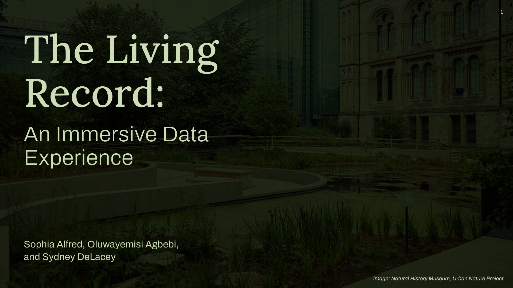

At the start of this module, I wrote about what I was hoping to get from it: a more intentional design practice, experience working in a real-world brief context, and a better understanding of how to use AI as a creative tool. Eleven weeks later, with a finished exhibit proposal and a final presentation delivered at the Natural History Museum itself, I want to reflect on whether that happened, as well as other unexpected takeaways.
The Presentation
Starting with the final presentation, which was a design problem in and of itself. Tom's lecture on communication in design framed it well: the medium is the message. The way you choose to communicate your work shapes how it's received, regardless of the quality of the work itself. That meant thinking carefully about who our audience was (the NHM research and UX team), what we needed them to understand (the design and the process behind it), and what medium would carry that most effectively.
Despite low attendance from the NHM team, presenting there felt meaningful. The feedback that our presentation and deliverables were of professional quality was genuinely gratifying, not just of the work that we'd done, but that we were communicating what we intended it to communicate.

Final Presentation — NHMTakeaways
Through this blog, by writing and reflecting, I've discovered an integral concept about creativity in design: you have to add structure. The tools and frameworks that we used throughout thsi project (the double diamond, the Smithsonian exhibit structure, IPOP model, the Robson framework, brainwriting) were all scaffolding that made creativity possible. Without them, a brief this open would have stayed open. The skills I'm taking away feel the same: sketching as a thinking tool, deliberate AI prompting, vibe coding, communicating design, all of them are ways of providing structure and support in the right places and expanding what we, as designers, are able to make because of it.
 Natural History Museum Final Presentation
Natural History Museum Final Presentation
I came into this module wanting to be a more intentional designer. I think I'm leaving as one.